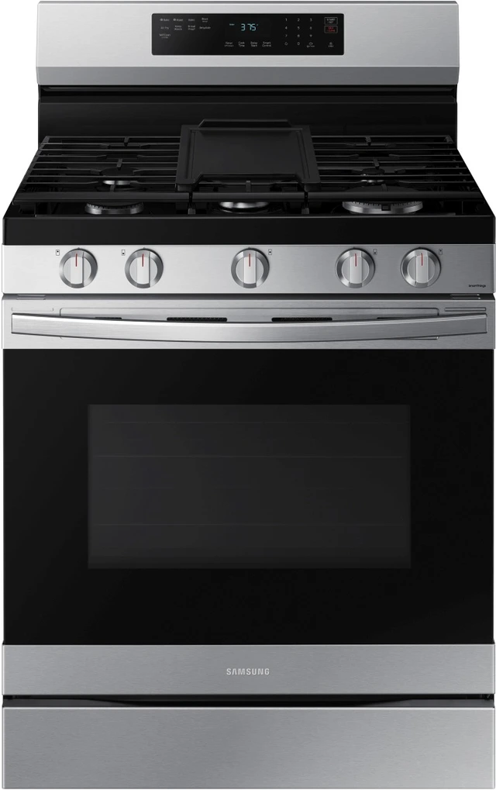

When a stove or oven stops working properly, preparing meals can quickly become a problem. Whether the stove plates are not heating, the oven is not reaching temperature, the gas ignition is failing or the appliance keeps tripping the power, MyFixer can inspect the appliance and identify the underlying fault.
We provide mobile stove and oven repair in Centurion, Pretoria and Johannesburg, with Midrand, Sandton, Randburg, Roodepoort, Fourways and selected surrounding areas in Gauteng also covered. Our technicians travel to homes, offices and businesses for on-site diagnostics and repairs where practical. We work on common electric and gas cooking appliances, including freestanding and built-in models.
We work with popular brands including Defy, Bosch, SMEG, Samsung and Whirlpool . Common repairs include heating elements, thermostats, temperature sensors, gas ignition systems, burners, oven doors, seals, fans, switches and control components.
Diagnosing faulty heating plates, elements, switches and electrical connections that prevent the hob from heating properly.
Testing heating elements, thermostats, temperature sensors and related components when the oven does not reach or maintain the correct temperature.
Diagnosing burner and ignition faults, including burners that fail to ignite or do not maintain a consistent flame.
Checking damaged seals, loose hinges and door alignment problems that can allow heat to escape during cooking.
Diagnosing noisy, slow or non-working fan motors that can affect heat circulation and cooking performance.
Checking unresponsive controls, faulty timers, digital displays, switches and other control-system problems.
MyFixer provides mobile stove and oven diagnostics and repair for homes, offices and businesses in Centurion, Pretoria, Johannesburg, Midrand, Sandton, Randburg, Roodepoort and Fourways , as well as selected surrounding areas across Gauteng. Our technicians travel to the customer for on-site assessment and repair where practical.
Repairing an older stove or oven is not always the most practical option. The best choice depends on the appliance's age, condition, fault and expected repair cost. Our technicians can explain the diagnostic findings and help you understand whether repairing the appliance or replacing it is the more practical option.
MyFixer diagnoses and repairs common stove and oven faults including heating problems, failed elements, thermostat and temperature issues, gas ignition problems, burner faults, oven door and seal problems, fan faults and control panel or timer issues.
Yes. We service common gas and electric stove and oven systems, including selected built-in and freestanding appliances, depending on the model, fault and availability of suitable parts.
Yes. MyFixer provides mobile stove and oven diagnostics and repair in Centurion, Pretoria, Johannesburg, Midrand, Sandton, Randburg, Roodepoort, Fourways and selected surrounding areas in Gauteng, subject to technician availability.
Yes. Where practical for the appliance and fault, our technicians provide on-site stove and oven diagnostics and repair at homes, offices and businesses. If a fault requires additional testing or repair away from the site, we will explain the next step before proceeding.